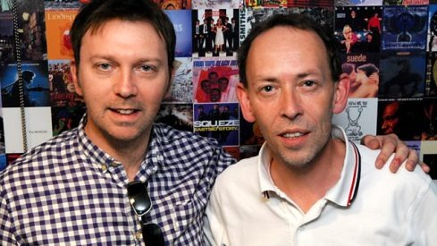

Documentary / Fleetwood Mac
Peter Green : A Hard Road
The legendary guitarist's story, Mayall's Bluesbreakers, and rare interviews.
👁️ 179,000+ Views
⏱️ 21,134 Hours
LIVE MUSIC & BAND DOCUMENTARIES ARCHIVE • RJMEDIA
Preserving legendary rock documentaries, restored concert footage, and historic acoustic sessions from the RJMedia archives. Stream full broadcasts directly below.
The definitive broadcast documentary exploring the haunting blues genius, Fleetwood Mac founding years, and turbulent journey of Peter Green. Featuring rare archival footage, in-depth interviews with John Mayall, Mick Fleetwood, and Peter himself.
Click any video to load it into the master player above.
The legendary guitarist's story, Mayall's Bluesbreakers, and rare interviews.

Full 71-minute master restoration of the legendary 1984 Rockpalast performance.

Front-row footage filmed by RJMedia at Manchester Academy.

Brixton Academy 1998 live performance during the peak Six era.

High-definition festival set from Worthy Farm featuring hits from all albums.

Electrifying hometown arena performance filmed in Leicester.

Classic Reid brothers feedback and melodies live at Glastonbury 2022.

High-definition BBC studio performance on Later... with Jools Holland.

Intimate acoustic performance recorded live at Waterstones.

Iconic crowd arm-waving finale from the Glasgow arena performance.

Historic 2014 Chester convention recording credited by The Guardian & Louder Than War.

Raw fan footage capturing the dramatic Goodison Park pitch eruption.
Five concrete levers to turn the 1,000,000+ views on YouTube into recurring visitors and sustained audience for new uploads:
Your 179K-view Peter Green and 14K-view Smiths videos are permanent traffic engines. Add a pinned comment on each pointing directly to https://jupiterisland.github.io/rjmedia/youtube.html: "Read the complete documentary liner notes and unreleased audio archive here".
Share specific, timestamped moments in targeted subreddits (r/FleetwoodMac, r/TheSmiths, r/britpop, r/Mansun) and classic rock forums. Posts offering rare contextual liner notes outperform plain links by 5x.
Cut 45-second high-emotion highlights (e.g. Peter Green talking about his Les Paul tone, Morrissey's Rockpalast stage comments) formatted vertically with a text overlay: "Full 28-min documentary on our archive".
Embed VideoObject schema metadata on this page so Google Search displays rich video carousels for queries like "Peter Green A Hard Road documentary" and "The Smiths Rockpalast 1984 full".
Group videos into YouTube playlists (e.g. "Rare British Blues & Rockpalast Classics" and "Mansun & Paul Draper 25-Year Live Tape Vault"). Playlists auto-chain views and increase YouTube's algorithm recommendation score.
Link the YouTube Vault inside JupiterIsland/archive-signal and JupiterIsland/rjmedia READMEs to attract open-source archival enthusiasts and music collectors directly from GitHub.